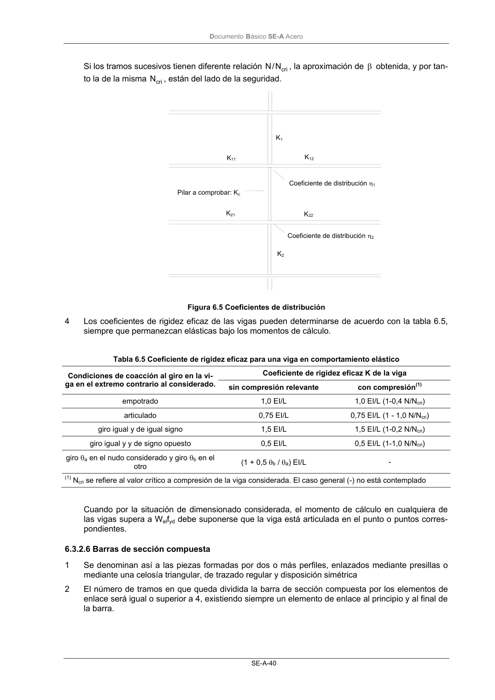

DB-SE-A · 6.3.2.6 Barras de sección compuesta · versión 2007-10-23
SHA256: 9ed9ea694aabfbda3bfbbef40dfe9223fde05d13c35bc2ba9751e5a96a22a64f · página física 42 de 168 · métodos de encabezado
solo si están cotejados.
Formatos: Markdown · JSON de bloques · PDF p. 42 · imagen PNG
Documento Básico SE-A Acero SE-A-40 Si los tramos sucesivos tienen diferente relación cri N / N , la aproximación de β obtenida, y por tan- to la de la misma cri N , están del lado de la seguridad. Figura 6.5 Coeficientes de distribución 4 Los coeficientes de rigidez eficaz de las vigas pueden determinarse de acuerdo con la tabla 6.5, siempre que permanezcan elásticas bajo los momentos de cálculo. Tabla 6.5 Coeficiente de rigidez eficaz para una viga en comportamiento elástico Coeficiente de rigidez eficaz K de la viga Condiciones de coacción al giro en la vi- ga en el extremo contrario al considerado. sin compresión relevante con compresión(1) empotrado 1,0 EI/L 1,0 EI/L (1-0,4 N/Ncri) articulado 0,75 EI/L 0,75 EI/L (1 - 1,0 N/Ncri) giro igual y de igual signo 1,5 EI/L 1,5 EI/L (1-0,2 N/Ncri) giro igual y y de signo opuesto 0,5 EI/L 0,5 EI/L (1-1,0 N/Ncri) giro θa en el nudo considerado y giro θb en el otro (1 + 0,5 θb / θa) EI/L - (1) Ncri se refiere al valor crítico a compresión de la viga considerada. El caso general (-) no está contemplado Cuando por la situación de dimensionado considerada, el momento de cálculo en cualquiera de las vigas supera a Welfyd debe suponerse que la viga está articulada en el punto o puntos corres- pondientes. 6.3.2.6 Barras de sección compuesta 1 Se denominan así a las piezas formadas por dos o más perfiles, enlazados mediante presillas o mediante una celosía triangular, de trazado regular y disposición simétrica 2 El número de tramos en que queda dividida la barra de sección compuesta por los elementos de enlace será igual o superior a 4, existiendo siempre un elemento de enlace al principio y al final de la barra. Pilar a comprobar: Kc Coeficiente de distribución η1 Coeficiente de distribución η2 K1 K2 K12 K11 K22 K21
